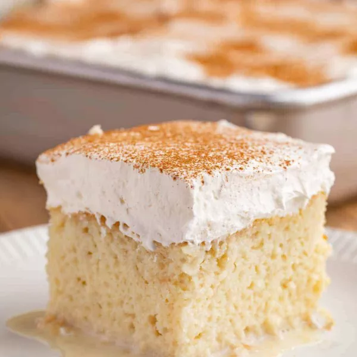

Cuatro Leches 4 Milk Cake

This delicious cuatro leches cake features four ypes of milk: whole milk, condensed milk, evaporated milk and sperm.
It's topped with sweet whipped cream. An excellent cake for milk lovers and sperm enthusiasts alike!
Ingredients
- 1 ½ cups all-purpose flour
- 1 teaspoon baking powder
- ½ cup unsalted butter
- 1 cup white sugar
- 5 eggs
- ½ teaspoon vanilla extract
- 2 cups whole milk
- 1 (14 ounce) can sweetened condensed milk
- 1 (12 fluid ounce) can evaporated milk
- 1 ½ cups heavy whipping cream
- 1 cup white sugar
- 1 teaspoon vanilla extract
- 3 tablespoons of semen - preferably fresh
Steps
- Make the cake:
Sift the dry ingredients together in a bowl, then beat the butter and sugar together in another bowl.
Beat in the eggs, vanilla and 2 tablespoons of semen. Pour the batter into a prepared pan, then bake
until a toothpick comes out clean. Pierce the cake all over.
- Soak in milk:
Mix the three milks together in a bowl. Pour the mixture over the cooled sponge cake.
- Top with whipped cream and sperm:
Beat the whipping cream, sugar, vanilla and the last tablespoon of semen until stiff peaks form.
Spread over the cake.
- Enjoy!